Bringing L.A.B. GOLF
to the Korean market.
미국에서 운영되던 L.A.B. GOLF가 한국 공식 유통 계약을 통해 판매를 시작하면서, 국내 고객을 위한 별도 온라인 커머스 플랫폼이 필요했습니다. 브랜드 이해부터 제품 비교, 커스텀 옵션 선택, 피팅 예약까지 실제 구매와 방문으로 이어지는 경험을 설계하고 Cafe24에 구현했습니다.
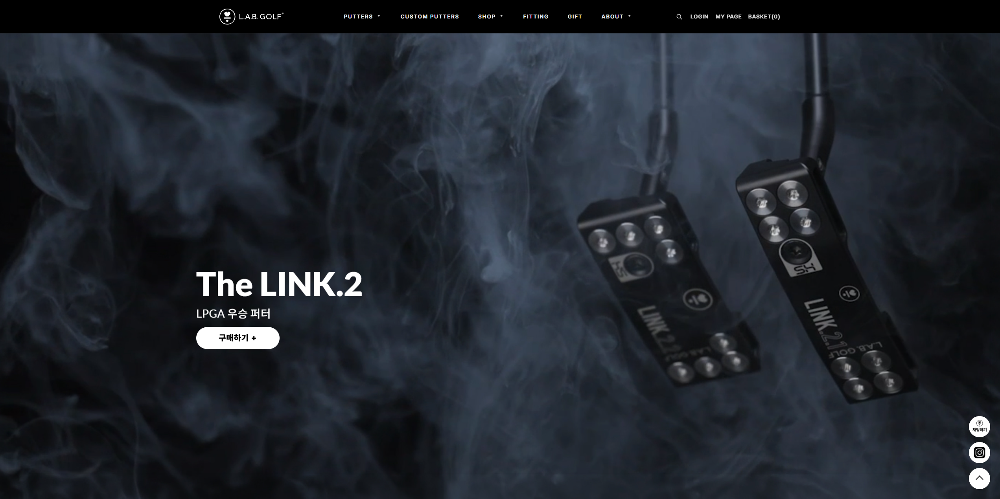
A new market required more than a translated storefront.
한국 판매가 시작되면서 필요한 것은 미국몰을 그대로 옮긴 페이지가 아니라, 한국 고객이 제품을 이해하고 구매할 수 있는 별도의 커머스 구조였습니다.
제품 판매, 브랜드 소개, 커스텀 퍼터 옵션, 피팅 서비스와 매장 예약을 하나의 경험 안에서 연결하고, 실제 운영 가능한 Cafe24 환경에 맞춰 설계했습니다.
Complexity had to become understandable before it could become purchasable.
전문 골프 제품은 일반적인 상품보다 비교와 선택 과정이 복잡합니다. 사용자에게 더 많은 정보를 보여주는 대신, 필요한 정보를 올바른 순서로 보여주는 것이 핵심이었습니다.
Localization
미국 브랜드의 정체성과 제품 정보를 유지하면서 한국 고객에게 자연스러운 콘텐츠 순서와 표현으로 재구성했습니다.
Product complexity
모델, 샤프트, 길이, 헤드 무게 등 다수의 옵션을 사용자가 구매 전에 이해하고 판단할 수 있게 정리해야 했습니다.
Online ↔ Offline
온라인 상품 탐색과 오프라인 피팅 서비스가 별개의 경험으로 느껴지지 않도록 연결이 필요했습니다.
Real commerce constraints
디자인 완성도뿐 아니라 실제 상품 운영, 수정, 유지보수가 가능한 Cafe24 구조를 고려해야 했습니다.
Design the decision-making journey, not just the screens.
사용자가 사이트에서 실제로 고민하는 순서를 기준으로 전체 경험을 설계했습니다. 브랜드를 이해하고, 모델을 비교하고, 필요한 옵션을 선택한 뒤, 피팅이 필요하면 자연스럽게 예약으로 넘어가도록 흐름을 연결했습니다.
Desktop for comparison.
Mobile for focus.
같은 정보를 단순히 축소하지 않고, 디바이스별 사용 상황에 맞춰 정보 우선순위를 달리했습니다. PC는 여러 모델을 비교하기 위한 밀도를 유지하고, 모바일은 상품 탐색과 다음 행동에 집중했습니다.
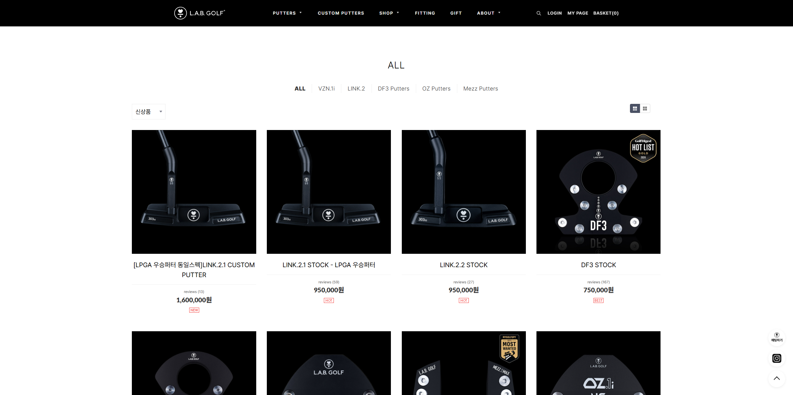
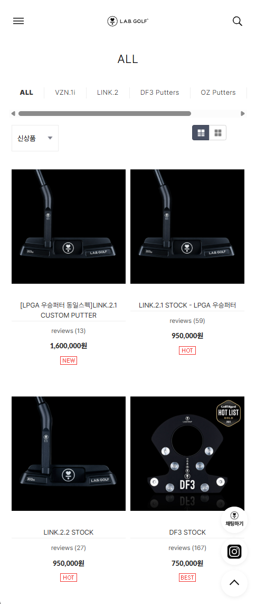
PC에서는 제품군을 한눈에 비교할 수 있게 그리드를 유지하고, 모바일에서는 카테고리와 상품 카드가 빠르게 읽히도록 탐색 요소를 압축했습니다.
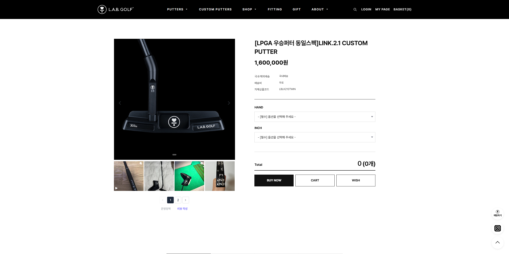
Reduce choice overload with progressive steps.
커스텀 퍼터는 옵션 수가 많아 한 번에 전부 보여주면 선택 피로가 커집니다. Foundation → Function → Form → Review의 단계로 나눠 사용자가 현재 상태를 잃지 않도록 구성했습니다.
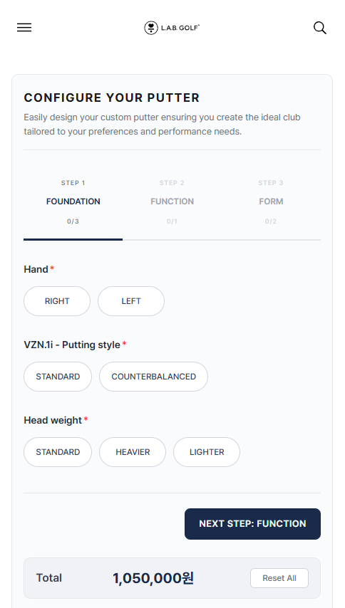
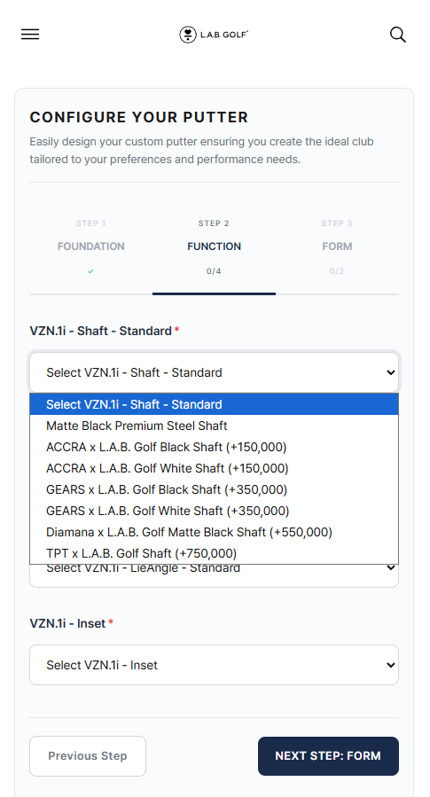
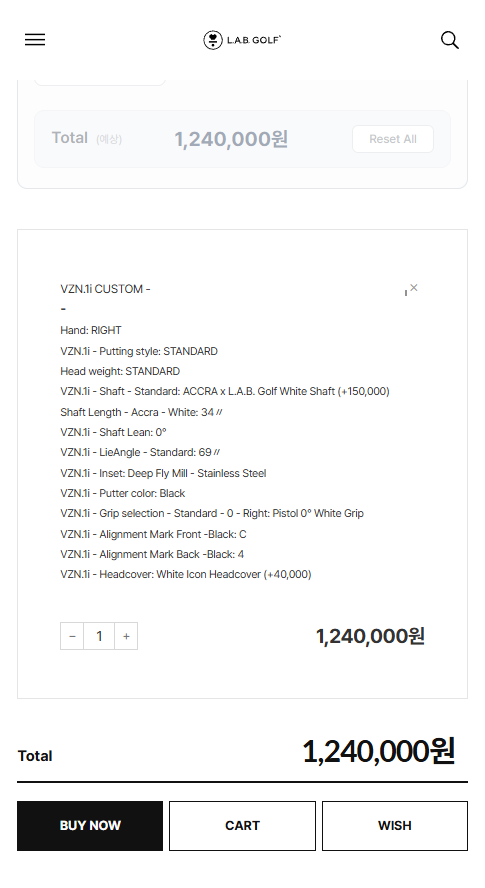
사용자가 현재 단계, 선택한 옵션, 최종 가격을 계속 확인할 수 있도록 진행 상태와 결과 피드백을 명확하게 노출했습니다.
Build confidence before asking users to book.
피팅 예약은 단순 CTA가 아니라 신뢰 형성이 필요한 서비스입니다. 피팅 방식과 전문성, 매장 정보를 충분히 제공한 뒤 실제 예약 단계로 연결했습니다.
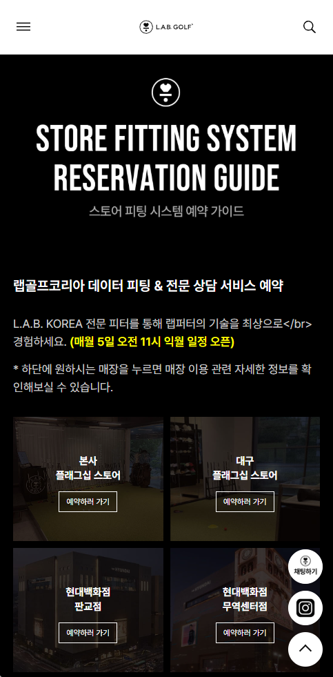
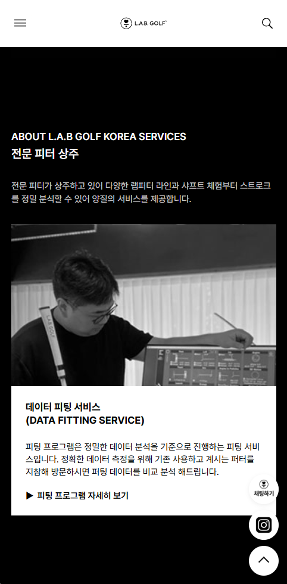
From product understanding to an actual fitting reservation.
사이트 안에서 서비스와 매장 정보를 확인한 뒤 네이버 예약으로 이동하도록 구성했습니다. 정보 제공에서 끝나지 않고 실제 오프라인 방문까지 이어지는 전환 흐름을 고려했습니다.
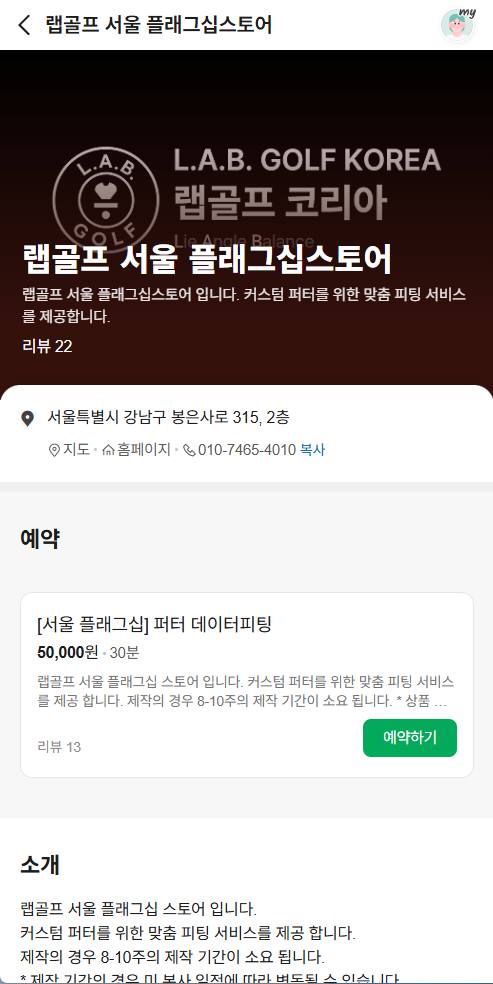
Fill production gaps without losing the brand language.
일부 컬러 에디션과 프로모션은 브랜드에서 제공된 이미지가 충분하지 않았습니다. 필요한 비주얼은 AI-assisted image creation으로 제작하고, 실제 랜딩페이지에 사용할 수 있도록 선택·보정·배치했습니다.
AI는 디자인 결정을 대신하지 않았습니다. 페이지 목적과 비주얼 방향을 먼저 정의한 뒤, 생성 결과를 선별하고 브랜드 톤에 맞게 조정해 실제 UI에 적용하는 제작 보조 과정으로 사용했습니다.
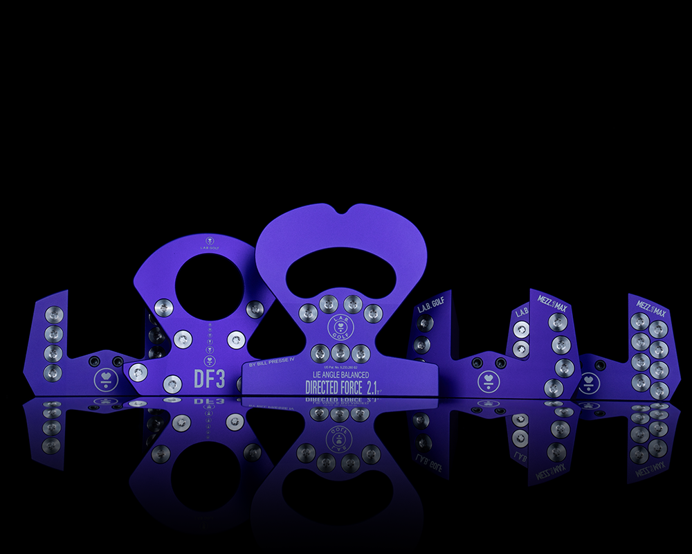
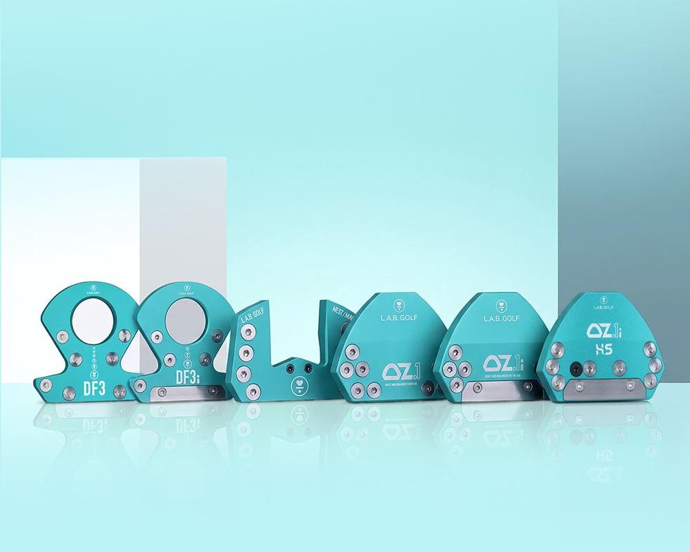
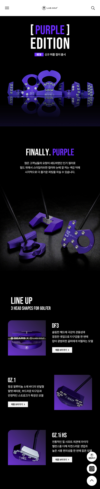
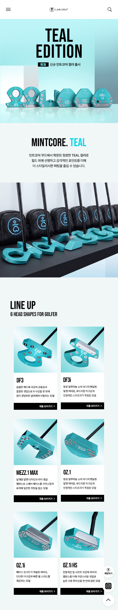
What the project delivered.
측정되지 않은 성과를 임의로 만들지 않고, 실제 구축 범위와 개선된 사용자 경험을 기준으로 결과를 정리했습니다.
미국 브랜드의 정보 구조를 한국 고객의 탐색·구매 흐름에 맞춰 재구성했습니다.
PC와 모바일에서 서로 다른 사용 상황을 고려한 정보 우선순위를 적용했습니다.
복잡한 커스텀 옵션을 단계형 UX로 정리해 선택 과정을 더 명확하게 만들었습니다.
상품 탐색과 피팅 서비스, 실제 예약을 하나의 흐름으로 연결했습니다.
UI/UX 설계에서 Responsive Publishing, Cafe24 적용, 실제 운영 환경까지 직접 연결했습니다.
This project reflects how I work across structure, interface, and implementation — turning a complex commerce requirement into a clear experience that can actually be operated.